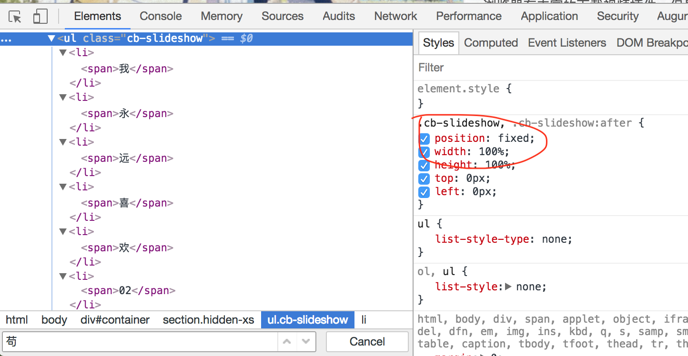
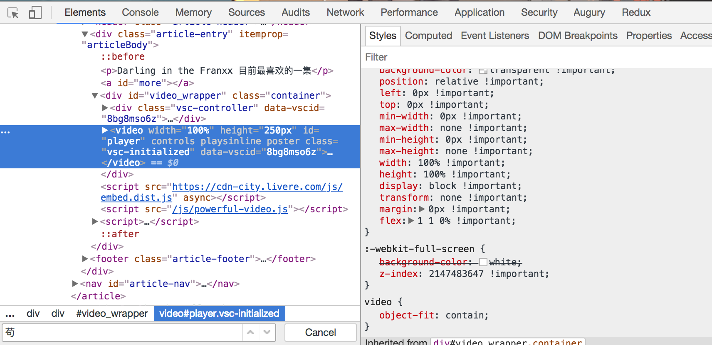
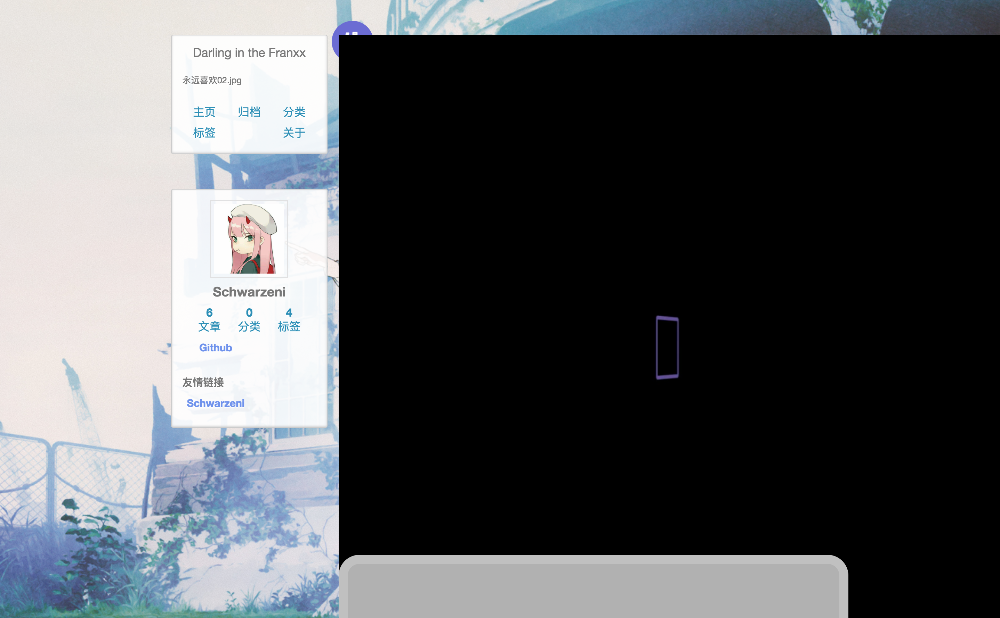
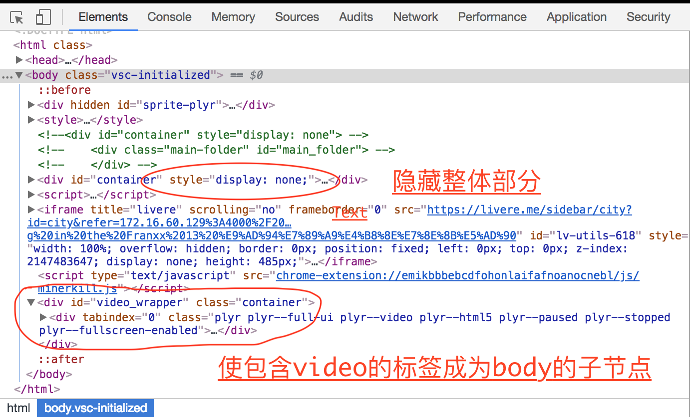
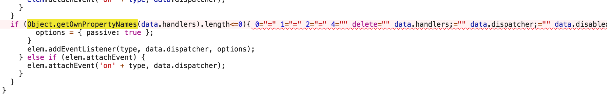
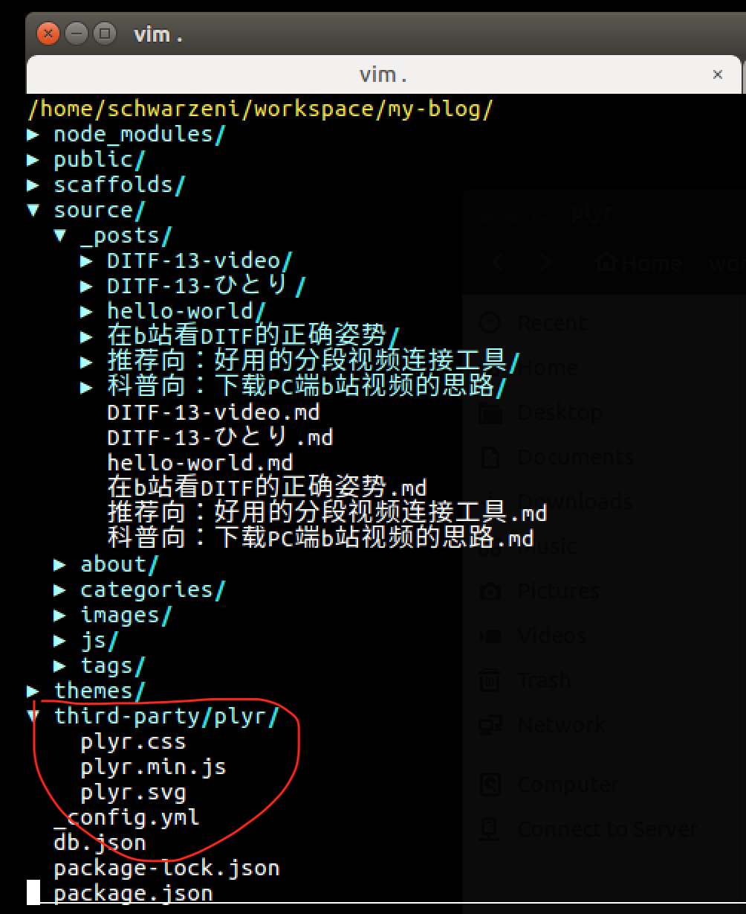

前言
先说两个坑，都是关于视频播放的，一个是博客页面的video无法全屏播放，另一个是hexo generate时如果文件过大的话会改变文件的内容，通常出现在加载第三方js或css库，这里我是加载一个H5视频的库。
而效率优化则是如何简化命令书写的
坑之一：H5视频无法全屏播放
问题如下：点击全屏播放的按钮后视频不见了只有背景的轮播图片了，如图1

这个问题是由于这个轮播图片的插件对其中的ul的css样式设定了position: fixed;，如图2

这会貌似会使其悬浮于全屏视屏标签的上方，因为Chrome为全屏视频标签添加的css也只是如下图3所示的样子，虽然我对css不太熟悉，但觉得relative还是干不过fixed

那么，如果一开始把轮播图片的问题去掉的话，也就是把position:fixed;去掉会怎么样呢，结果发现视频被框在一个小范围之中，如图4

应该是包裹文章的div的css样式的问题，wtf，我不想再去研究css了…
那问题来了，怎么办？
我后来想到的思路是：在视频全屏之前把第一个小问题的position:fixed;去掉，同时把整体页面隐藏，并让包含video的标签成为body的子节点，如下图5所示

点击退出全屏时在将之前的操作复原，完美解决问题。
由于我使用的Plyr提供了相关的api接口，所以我可以方便地编写代码如下
相关的Plyr的API见其文档
1 | // 初始化第三方播放器 |
坑之二：hexo generate加载大文件时出错
是的，这个错误莫名奇妙，如图6，它居然给我把文件改了

这是我之前使用video.js时加载它的js文件，貌似是因为文件比较大吧
对于hexo generate，它的作用应该是把各种资源文件合并放到public文件夹中，包括Markdown转成html，各种HTML文件的合成，css，js，image资源的合并，但是，我认为第三方库并不需要处理，所以可以把这些文件集中放到一个独立的文件夹中，再执行完hexo generate后再把它拷进去，如图7

那每次都要手动拷贝太麻烦了不是吗，下面就来讲一个效率优化
效率优化
多希望每次就敲一个命令就好了，对不对，所以写一些脚本吧
~/.bash_profile1
2
3
4
5
6
7
8
9
10
11# 设定hexo目录
export MY_BLOG_HOME=~/workspace/my-blog
# 设定一些别名
# 启动本地预览服务器
alias hexo_local="cd $MY_BLOG_HOME && npm run local"
# 部署到远程服务器
alias hexo_deploy="cd $MY_BLOG_HOME && npm run deploy"
# 到hexo根目录
alias hexo_blog_home="cd $MY_BLOG_HOME"
# 到hexo博客资源目录
alias hexo_blog_post_src="cd $MY_BLOG_HOME/source/_posts"
package.json1
2
3
4
5
6...
"scripts": {
"local": "hexo clean && hexo g && cp -r $MY_BLOG_HOME/third-party $MY_BLOG_HOME/public &&hexo s",
"deploy": "hexo clean && hexo g && cp -r $MY_BLOG_HOME/third-party $MY_BLOG_HOME/public && hexo d"
}
...
这样子我每次要到达博客根目录，本地预览，远程部署分别就敲hexo_blog_home,hexo_local,hexo_deploy就可以了，方便快捷